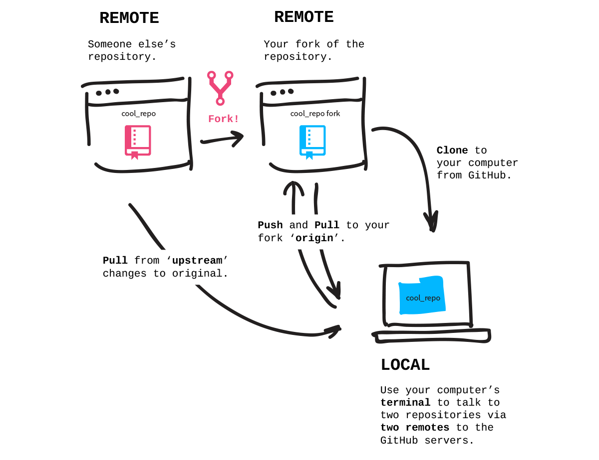

關卡內容：
從 GitHub.com 建立專案 fork，並 clone 到電腦上。
Forks
你已經在電腦上建立了一個專案並且 push 到 GitHub 上，但有趣的不僅如此，更重要的是與人們在不同的專案中合作。
當你 fork 一個 repository 時，實際上是複製了一份 repository 到自己的 GitHub 帳號下，換句話說，你的 fork 成為了一個 remote repository。通常我們透過 forks 用來建立自己所需使用的修改版本，或是協助原始專案修正錯誤、新增功能。
當你成功 forked 專案後，便可以從 GitHub 將它 clone 到你的電腦上。這樣一來就可以在沒有網路連線狀況下，修改電腦裡的專案內容。

步驟：Fork Patchwork Repository
我們接下來要使用的專案是 github.com/jlord/patchwork。到頁面上點擊右上方的 fork 按鈕，當 fork 的動畫完成時，你的帳號中就會出現一份 Patchwork 專案的複本。接下來，把在右邊側欄的 HTTPS clone URL 複製起來。
步驟：在電腦上 Clone Fork
現在，在終端機 clone repository 到你的電腦上，他會自動替 repository 建立一個新的資料夾，所以你不需要自己建立一個。但請注意不要在另一個 Git repository 資料夾中 clone！所以，如果你還在先前挑戰所使用的 'hello-world' repository 中，請先離開那個資料夾。你可以透過切換資料夾指令以及兩個點來移動到資料夾的上一層：
$ cd ..
然後 clone：
$ git clone <URLFROMGITHUB>
切換到剛剛建立的 fork 資料夾（在這個例子中叫做 'patchwork'）：
$ cd patchwork
現在你已經在電腦上得到了一份 repository 的副本，並且被自動連接到你 GitHub 帳號下的 remote repository（你的 fork 副本）。
步驟：連結到原始的 Repository
但如果原始專案的內容有改變了呢？你會希望能夠 pull 這些變更。所以讓我們來新增另外一個 remote 連結到原始的專案 github.com/jlord/patchwork，repository 的 URL 可以在 GitHub 原始專案的側邊欄下方找到。
你可以隨意替這個 remote 連結命名，但大家通常用 'upstream'，讓我們也用這個名字：
$ git remote add upstream https://github.com/jlord/patchwork.git
確認你完成了所有步驟：
git-it verify
前往下一個關卡
git-it
撇步
- 新增 remote 連結
$ git remote add <REMOTENAME> <URL>- 檢視 remote 連結
$ git remote -v